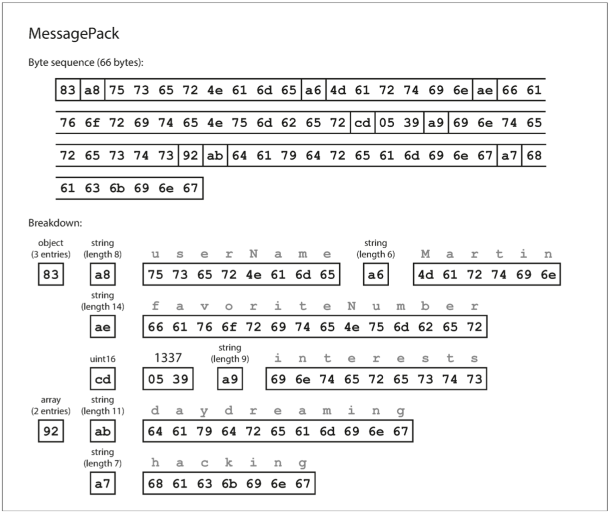
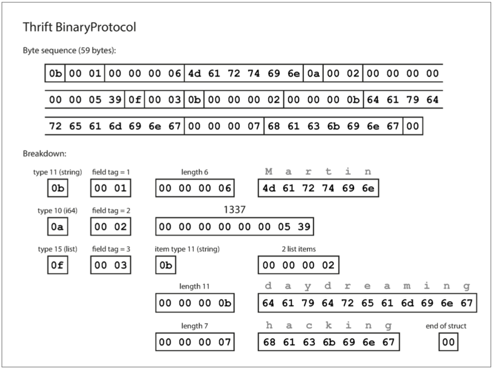
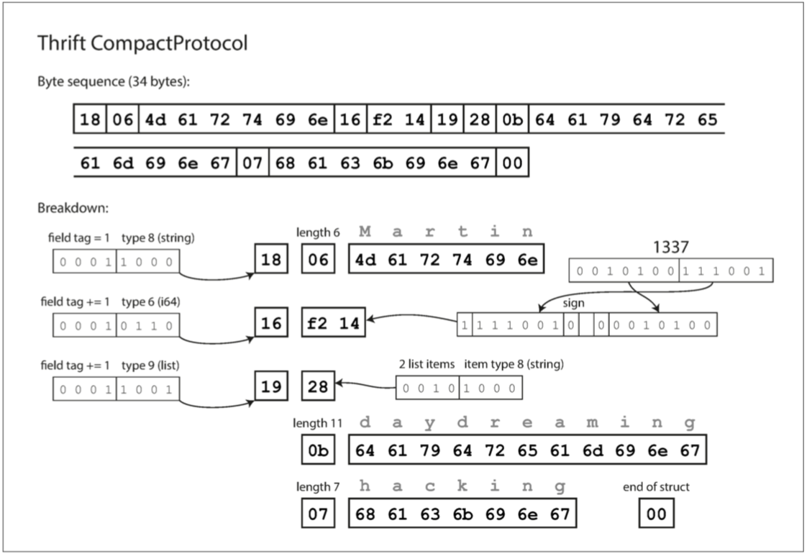
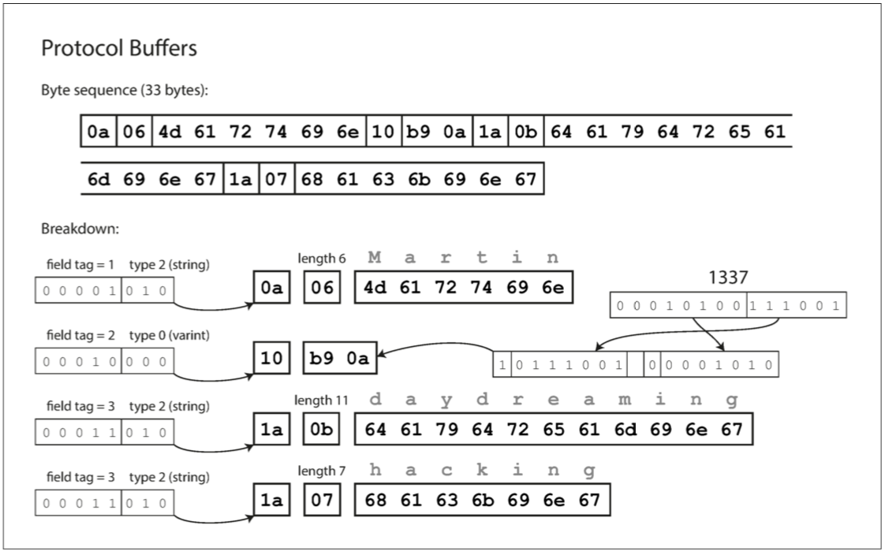
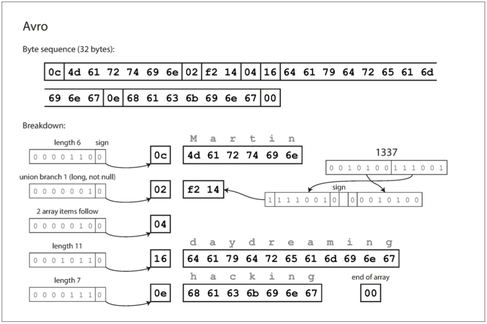
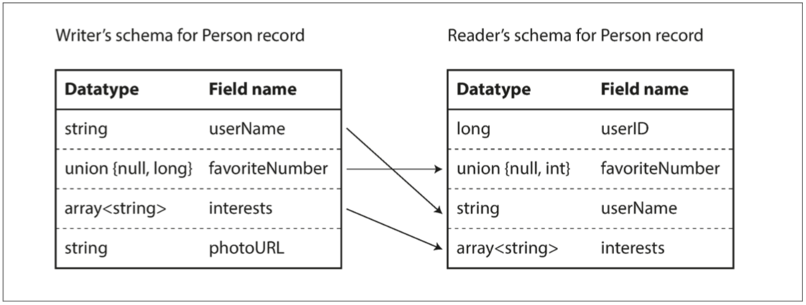

DDIA 阅读笔记第四章：编码与演化
摘要
本章介绍几种不同的编码格式，包括 JSON、XML、Protocol Buffers、Thrift 和 Avr，它们对兼容性的影响，如何应对模式变化；还讨论如何使用这些格式进行数据存储和通信。
简介
应用程序不可避免地随时间而变化。新产品的推出，对需求的深入理解，或者商业环境的变化，总会伴随着 功能（feature） 的增增改改。
- 可演化性（evolvability） ：应该尽力构建能灵活适应变化的系统。
在大多数情况下，修改应用程序的功能也意味着需要更改其存储的数据：可能需要使用新的字段或记录类型，或者以新方式展示现有数据。数据模型有不同的方法来应对这种变化：
- 关系数据库通常假定数据库中的所有数据都遵循一个模式：尽管可以更改该模式（通过模式迁移，migration，即
ALTER语句），但是在任何时间点都有且仅有一个正确的模式。 - 读时模式（schema-on-read，或 无模式，即 schemaless）数据库不会强制一个模式，因此数据库可以包含在不同时间写入的新老数据格式的混合（ “文档模型中的模式灵活性” ）。
模式变更
当数据 格式（format） 或 模式（schema） 发生变化时，通常需要对应用程序代码进行相应的更改（例如，为记录添加新字段，然后修改程序开始读写该字段）。但在大型应用程序中，代码变更通常不会立即完成：
- 对于 服务端（server-side） 应用程序，可能需要执行 滚动升级 （rolling upgrade） （也称为 阶段发布（staged rollout） ），一次将新版本部署到少数几个节点，检查新版本是否运行正常，然后逐渐部完所有的节点。这样无需中断服务即可部署新版本，为频繁发布提供了可行性，从而带来更好的可演化性。
- 对于 客户端（client-side） 应用程序，升不升级就要看用户的心情了。用户可能相当长一段时间里都不会去升级软件。
双向兼容
这意味着，新旧版本的代码，以及新旧数据格式可能会在系统中同时共处。系统想要继续顺利运行，就需要保持 双向兼容性：
- 向后兼容 (backward compatibility)：新的代码可以读取由旧的代码写入的数据。
- 向前兼容 (forward compatibility)：旧的代码可以读取由新的代码写入的数据。
向后兼容性通常并不难实现：新代码的作者当然知道由旧代码使用的数据格式，因此可以显示地处理它（最简单的办法是，保留旧代码即可读取旧数据）。
向前兼容性可能会更棘手，因为旧版的程序需要忽略新版数据格式中新增的部分。
编码数据的格式
程序通常（至少）使用两种形式的数据：
- 在内存中，数据保存在对象、结构体、列表、数组、散列表、树等中。 这些数据结构针对 CPU 的高效访问和操作进行了优化（通常使用指针）。
- 如果要将数据写入文件，或通过网络发送，则必须将其 编码（encode） 为某种自包含的字节序列（例如，JSON 文档）。 由于每个进程都有自己独立的地址空间，一个进程中的指针对任何其他进程都没有意义，所以这个字节序列表示会与通常在内存中使用的数据结构完全不同。
所以，需要在两种表示之间进行某种类型的翻译。
- 从内存中表示到字节序列的转换称为 编码（Encoding） ，也称为 序列化（serialization） 或 编组（marshalling）
- 反过来称为 解码（Decoding），也称为解析（Parsing），反序列化（deserialization），反编组 (unmarshalling）。
注意：
- 编码（encode） 与 加密（encryption） 无关。 本书不讨论加密。
- Marshal 与 Serialization 的区别：Marshal 不仅传输对象的状态，而且会一起传输对象的方法（相关代码）。
术语冲突
不幸的是，在 第七章： 事务（Transaction） 的上下文里，序列化（Serialization） 这个术语也出现了，而且具有完全不同的含义。尽管序列化可能是更常见的术语，为了避免术语重载，本书中坚持使用 编码（Encoding） 表达此含义。
这是一个常见的问题，因而有许多库和编码格式可供选择。
语言特定的格式
许多编程语言都内建了将内存对象编码为字节序列的支持。例如，Java 有 java.io.Serializable 【1】，Ruby 有 Marshal【2】，Python 有 pickle【3】等等。许多第三方库也存在，例如 Kryo for Java 【4】。
这些编码库非常方便，可以用很少的额外代码实现内存对象的保存与恢复。但是它们也有一些深层次的问题：
- 这类编码通常与特定的编程语言深度绑定，其他语言很难读取这种数据。如果以这类编码存储或传输数据，那你就和这门语言绑死在一起了。并且很难将系统与其他组织的系统（可能用的是不同的语言）进行集成。
- 为了恢复相同对象类型的数据，解码过程需要 实例化任意类 的能力，这通常是安全问题的一个来源【5】：如果攻击者可以让应用程序解码任意的字节序列，他们就能实例化任意的类，这会允许他们做可怕的事情，如远程执行任意代码【6,7】。
- 在这些库中，数据版本控制通常是事后才考虑的。因为它们旨在快速简便地对数据进行编码，所以往往忽略了前向后向兼容性带来的麻烦问题。
- 效率（编码或解码所花费的 CPU 时间，以及编码结构的大小）往往也是事后才考虑的。 例如，Java 的内置序列化由于其糟糕的性能和臃肿的编码而臭名昭著【8】。
因此，除非临时使用，采用语言内置编码通常是一个坏主意。
JSON、XML 和二进制变体
JSON 和 XML 是最常用的可被多种编程语言读写的标准编码。它们广为人知，广受支持，也 “广受憎恶”。
- XML 经常收到批评：过于冗长且复杂
- JSON 的流行则主要源于（通过成为 JavaScript 的一个子集）Web 浏览器的内置支持，以及相对于 XML 的简单性。
- CSV 是另一种流行的与语言无关的格式，尽管其功能相对较弱。
JSON，XML 和 CSV 属于文本格式，具有人类可读性。但它们也存在一些微妙的问题：
数字（numbers）
编码有很多模糊之处。在 XML 和 CSV 中，无法直接区分数字和碰巧由数字组成的字符串。 JSON 虽然区分字符串与数字，但并不区分整数和浮点数，并且不能指定精度。
- 处理大数字时是个问题。例如大于 \(2^{53}\) 的整数无法使用 IEEE 754 双精度浮点数精确表示，因此在使用浮点数（例如 JavaScript）的语言进行分析时，这些数字会变得不准确。
JSON 和 XML 对 Unicode 字符串有很好的支持，但是它们不支持二进制数据（即不带 字符编码 (character encoding) 的字节序列）。可以通过使用 Base64 将二进制数据编码为文本来绕过此限制，虽然管用，但比较 Hacky，并且会增加三分之一的数据大小。
XML 和 JSON 都有可选的模式支持。这些模式语言相当强大，所以学习和实现起来都相当复杂。 XML 模式的使用相当普遍，但许多基于 JSON 的工具才不会去折腾模式。对数据的正确解读（例如区分数值与二进制串）取决于模式中的信息，因此不使用 XML/JSON 模式的应用程序可能需要对相应的编码 / 解码逻辑进行硬编码。
CSV 没有任何模式，因此每行和每列的含义完全由应用程序自行定义。如果应用程序变更添加了新的行或列，那么这种变更必须通过手工处理。 CSV 也是一个相当模糊的格式（如果一个值包含逗号或换行符，会发生什么？）。尽管其转义规则已经被正式指定【13】，但并不是所有的解析器都正确的实现了标准。
尽管存在这些缺陷，但 JSON、XML 和 CSV 对很多需求来说已经足够好了。它们很可能会继续流行下去，特别是作为数据交换格式来说（即将数据从一个组织发送到另一个组织）。在这种情况下，只要人们对格式是什么意见一致，格式有多美观或者效率有多高效就无所谓了。让不同的组织就这些东西达成一致的难度超过了绝大多数问题。
二进制编码
对于仅在组织内部使用的数据，使用通用的编码格式压力较小。例如，可以选择更紧凑或更快的解析格式。虽然对小数据集来说，收益可以忽略不计；但一旦达到 TB 级别，数据格式的选型就会产生巨大的影响。
JSON 比 XML 简洁，但与二进制格式相比还是太占空间。这一事实导致大量二进制编码版本 JSON（MessagePack、BSON、BJSON、UBJSON、BISON 和 Smile 等） 和 XML（例如 WBXML 和 Fast Infoset）的出现。这些格式已经在各种各样的领域中采用，但是没有一个能像文本版 JSON 和 XML 那样被广泛采用。
这些格式中的一些扩展了一组数据类型（例如，区分整数和浮点数，或者增加对二进制字符串的支持），另一方面，它们没有改变 JSON / XML 的数据模型。特别是由于它们没有规定模式，所以它们需要在编码数据中包含所有的对象字段名称。也就是说，在 例 4-1 中的 JSON 文档的二进制编码中，需要在某处包含字符串 userName，favoriteNumber 和 interests。
例 4-1 本章中用于展示二进制编码的示例记录
1 | { |
一个 MessagePack 的例子，它是一个 JSON 的二进制编码。图 4-1 显示了如果使用 MessagePack 【14】对 例 4-1 中的 JSON 文档进行编码，则得到的字节序列。前几个字节如下：
- 第一个字节
0x83表示接下来是 3 个字段（低四位 =0x03）的 对象 object（高四位 =0x80）。 （如果想知道如果一个对象有 15 个以上的字段会发生什么情况，字段的数量塞不进 4 个 bit 里，那么它会用另一个不同的类型标识符，字段的数量被编码两个或四个字节）。 - 第二个字节
0xa8表示接下来是 8 字节长（低四位 =0x08）的字符串（高四位 =0x0a）。 - 接下来八个字节是 ASCII 字符串形式的字段名称
userName。由于之前已经指明长度，不需要任何标记来标识字符串的结束位置（或者任何转义）。 - 接下来的七个字节对前缀为
0xa6的六个字母的字符串值Martin进行编码，依此类推。
二进制编码长度为 66 个字节，仅略小于文本 JSON 编码所取的 81 个字节（删除了空白）。所有的 JSON 的二进制编码在这方面是相似的。空间节省了一丁点（以及解析加速）是否能弥补可读性的损失，谁也说不准。
在下面的章节中，能达到比这好得多的结果，只用 32 个字节对相同的记录进行编码。

Thrift 与 Protocol Buffers
Apache Thrift 【15】和 Protocol Buffers（protobuf）【16】是基于相同原理的二进制编码库。 Protocol Buffers 最初是在 Google 开发的，Thrift 最初是在 Facebook 开发的，并且都是在 2007~2008 开源的【17】。 Thrift 和 Protocol Buffers 都需要一个模式来编码任何数据。要在 Thrift 的 例 4-1 中对数据进行编码，可以使用 Thrift 接口定义语言（IDL） 来描述模式，如下所示：
1 | struct Person { |
Protocol Buffers 的等价模式定义看起来非常相似：
1 | message Person { |
Thrift 和 Protocol Buffers 每一个都带有一个代码生成工具，它采用了类似于这里所示的模式定义，并且生成了以各种编程语言实现模式的类【18】。应用程序代码可以调用此生成的代码来对模式的记录进行编码或解码。
Thrift 有两种不同的、跨语言的二进制编码格式：
BinaryProtocol：详见
thrift/doc/specs/thrift-binary-protocol.md
，对于结构体编码规则为
- field-type：1 字节
- field id：2 字节，记录绝对值
- field-value：int8 1 字节，int16 2 字节，以此类推
CompactProtocol：压缩编码，详见
thrift/doc/specs/thrift-compact-protocol.md
。差距主要是整数使用了 zigzag 和变长编码（var int），结构体 header 压缩，长度字段使用变长整数。
- field-type：4 bit 无符号
- field id：4 bit，记录相对差值；或 16bit 符号 zigzag 整数记录绝对值
- field-value：整数使用 zigzag 和变长编码（var int），长度整数可变。
- var int：解决小整数存储浪费问题，每个字节最高位表示是否还有剩余字节，有效字节有 7 bit，int32 需要 1-5 字节存储。
- zigzag：解决大负数无法压缩的问题，高位 1 太多。方法是将负数编码成正奇数，正数编码成偶数。解码的时候遇到偶数直接除 2 就是原值，遇到奇数就加 1 除 2 再取负就是原值。
每个字节的最高位用来指示是否还有更多的字节。type 4 位，field tag 4 位记录相对差值。
先来看看 BinaryProtocol。使用这种格式的编码来编码 例 4-1 中的消息只需要 59 个字节，如 图 4-2 所示【19】。

图 4-2 使用 Thrift 二进制协议编码的记录
可以发现：
- 每个字段都有一个类型标识（type），还可以根据需要指定长度（字符串、list） 。出现在数据中的字符串
(“Martin”, “daydreaming”, “hacking”)也被编码为 ASCII（或者说，UTF-8），与之前类似。 - 编码数据包含字段标记（tag），数字
(1, 2 和 3)，而非字段名。
Thrift CompactProtocol 编码在语义上等同于 BinaryProtocol，但是如 图 4-3 所示，它只将相同的信息打包成只有 34 个字节。它：
- 将字段类型和标签号打包到单个字节中
- 使用可变长度整数来实现。
- 数字 1337 不是使用全部八个字节，而是用两个字节编码，每个字节的最高位用来指示是否还有更多的字节。这意味着 - 64 到 63 之间的数字被编码为一个字节，-8192 和 8191 之间的数字以两个字节编码，等等。较大的数字使用更多的字节。

图 4-3 使用 Thrift 压缩协议编码的记录
最后，Protocol Buffers（只有一种二进制编码格式）对相同的数据进行编码，如 图 4-4 所示。 它的打包方式稍有不同，但与 Thrift 的 CompactProtocol 非常相似。 Protobuf 将同样的记录塞进了 33 个字节中。

图 4-4 使用 Protobuf 编码的记录
需要注意的一个细节：在前面所示的模式中，每个字段被标记为必需或可选，但是这对字段如何编码没有任何影响（二进制数据中没有任何字段指示某字段是否必须）。区别在于，如果字段设置为 required，但未设置该字段，则所需的运行时检查将失败，这对于捕获错误非常有用。
字段标签和模式演变
模式演变：模式不可避免地需要随着时间而改变。 Thrift 和 Protocol Buffers 如何处理模式更改，同时保持向后兼容性？
从示例中可以看出，编码的记录就是其编码字段的拼接。每个字段由其标签号码（样本模式中的数字 1,2,3）标识，并用数据类型（例如字符串或整数）注释。如果没有设置字段值，则简单地从编码记录中省略。从中可以看到，字段标记对编码数据的含义至关重要。你可以更改架构中字段的名称，因为编码的数据永远不会引用字段名称，但不能更改字段的标记，因为这会使所有现有的编码数据无效。
添加新的字段到架构，只需给每个字段一个新的标签号码。
- 向前兼容性：旧的代码可以简单地忽略新添加的、未识别标识的字段。数据类型注释允许解析器确定需要跳过的字节数。这保证了旧代码可以读取由新代码编写的记录。
- 向后兼容性：
- 只要每个字段都有唯一的标签标识，新的代码总是可以读取旧的数据，因为标签标识仍然具有相同的含义。
- 添加新的字段，不能设置为必需。在模式的初始部署之后 添加的每个字段必须是可选的或具有默认值。
删除一个字段就像添加一个字段，只是这次要考虑的是向前兼容性。这意味着：
- 只能删除一个可选的字段（必需字段永远不能删除）
- 不能再次使用相同的标签号码（因为你可能仍然有数据写在包含旧标签号码的地方，而该字段必须被新代码忽略）。
数据类型和模式演变
改变字段的数据类型，也许是可能的，但是有一个风险，值将失去精度或被截断。例如，假设你将一个 32 位的整数变成一个 64 位的整数。新代码可以轻松读取旧代码写入的数据，因为解析器可以用零填充任何缺失的位。但是，如果旧代码读取由新代码写入的数据，则旧代码仍使用 32 位变量来保存该值。如果解码的 64 位值不适合 32 位，则它将被截断。
Protobuf 没有列表或数组数据类型，而是有一个字段的重复标记（repeated，这是除必需和可选之外的第三个选项）。如 图 4-4 所示，重复字段的编码正如它所说的那样：同一个字段标记只是简单地出现在记录中。这允许将可选（单值）字段更改为重复（多值）字段。读取旧数据的新代码会看到一个包含零个或一个元素的列表（取决于该字段是否存在）。读取新数据的旧代码只能看到列表的最后一个元素。
Thrift 有一个专用的 list 数据类型，它使用列表元素的数据类型进行参数化。这不允许 Protocol Buffers 所做的从单值到多值的演变，但是它具有支持嵌套列表的优点。
Avro
Apache Avro 【20】是另一种二进制编码格式，与 Protocol Buffers 和 Thrift 有着有趣的不同。 它是作为 Hadoop 的一个子项目在 2009 年开始的，因为 Thrift 不适合 Hadoop 的用例【21】。
Avro 也使用模式来指定正在编码的数据的结构。 它有两种模式语言：一种（Avro IDL）用于人工编辑，一种（基于 JSON）更易于机器读取。
我们用 Avro IDL 编写的示例模式可能如下所示， 模式中没有标签号码：
1 | record Person { |
等价的 JSON 表示：
1 | { |
如果我们使用这个模式编码我们的例子记录（例 4-1），Avro 二进制编码只有 32 个字节长，这是我们所见过的所有编码中最紧凑的。 编码字节序列的分解如 图 4-5 所示。
如果你检查字节序列，你可以看到没有什么可以识别字段或其数据类型。 编码只是由连在一起的值组成。 一个字符串只是一个长度前缀，后跟 UTF-8 字节，但是在被包含的数据中没有任何内容告诉你它是一个字符串。 它可以是一个整数，也可以是其他的整数。 整数使用可变长度编码（与 Thrift 的 CompactProtocol 相同）进行编码。

图 4-5 使用 Avro 编码的记录
为了解析二进制数据，你按照它们出现在模式中的顺序遍历这些字段，并使用模式来告诉你每个字段的数据类型。这意味着如果读取数据的代码使用与写入数据的代码完全相同的模式，才能正确解码二进制数据。Reader 和 Writer 之间的模式不匹配意味着错误地解码数据。
那么，Avro 如何支持模式演变呢？
Writer 模式与 Reader 模式
有了 Avro，当应用程序想要编码一些数据（将其写入文件或数据库，通过网络发送等）时，它使用它知道的任何版本的模式编码数据，例如，模式可能被编译到应用程序中。这被称为 Writer 模式。
当一个应用程序想要解码一些数据（从一个文件或数据库读取数据，从网络接收数据等）时，它希望数据在某个模式中，这就是 Reader 模式。这是应用程序代码所依赖的模式，在应用程序的构建过程中，代码可能已经从该模式生成。
Avro 的关键思想是 Writer 模式和 Reader 模式不必是相同的 - 他们只需要兼容。当数据解码（读取）时，Avro 库通过并排查看 Writer 模式和 Reader 模式并将数据从 Writer 模式转换到 Reader 模式来解决差异。 Avro 规范【20】确切地定义了这种解析的工作原理，如 图 4-6 所示。
例如，如果 Writer 模式和 Reader 模式的字段顺序不同，这是没有问题的，因为模式解析通过字段名匹配字段。
- 如果读取数据的代码遇到出现在 Writer 模式中但不在 Reader 模式中的字段，则忽略它。
- 如果读取数据的代码需要某个字段，但是 Writer 模式不包含该名称的字段，则使用在 Reader 模式中声明的默认值填充。

图 4-6 一个 Avro Reader 解决读写模式的差异
模式演变规则
Avro 下的兼容性：
- 向前兼容：新版本的 Writer 模式搭配旧版本的 Reader 模式。
- 向后兼容：旧版本的 Writer 模式搭配新版本的 Reader 模式。
为了保持兼容性，你只能添加或删除具有默认值的字段。
- 添加了一个新的、有默认值的字段（存在于新模式，旧模式中不存在）。当使用新模式的 Reader 读取使用旧模式写入的记录时，将为缺少的字段填充默认值。
- 删除同理
违反兼容性：
- 添加一个没有默认值的字段，新的 Reader 将无法读取旧 Writer 写的数据，破坏向后兼容性。
- 删除没有默认值的字段，旧的 Reader 将无法读取新 Writer 写入的数据，打破向前兼容性。
Avro 没有像 Protocol Buffers 和 Thrift 那样的 optional 和 required 标记，它使用联合类型和默认值，显式地标识某字段可以为 null，例如，union {null, long, string} field; 表示 field 可以是数字或字符串，也可以是 null。
- 如果要将 null 作为默认值，则它必须是 union 的分支之一
- union 写法虽然更冗长，但是明确标识有助于防止出错
只要 Avro 可以支持相应的类型转换，就可以改变字段的数据类型。更改字段的名称也是可能的，但有点棘手：Reader 模式可以包含字段名称的别名，所以它可以匹配旧 Writer 的模式字段名称与别名。这意味着更改字段名称是向后兼容的，但不能向前兼容。同样，向联合类型添加分支也是向后兼容的，但不能向前兼容。
- 新 reader 可以通过别名映射读取旧 writer 的数据，所以向后兼容
- 新 writer 按新的 name 写，旧 reader 无法读取，所以不能向前兼容
Reader 如何知道其 Writer 模式？
对于一段特定的编码数据，Reader 如何知道其 Writer 模式？我们不能只将整个模式包括在每个记录中，因为模式可能比编码的数据大得多，从而使二进制编码节省的所有空间都是徒劳的。
答案取决于 Avro 使用的上下文。举几个例子：
有很多记录的大文件
Avro 的一个常见用途 - 尤其是在 Hadoop 环境中 - 用于存储包含数百万条记录的大文件，所有记录都使用相同的模式进行编码。在这种情况下，可以在文件的开头只包含一次 Writer 模式。 Avro 指定了一个文件格式（对象容器文件）来做到这一点。
支持独立写入的记录的数据库
在一个数据库中，不同的记录可能会在不同的时间点使用不同的 Writer 模式来写入 - 你不能假定所有的记录都有相同的模式。最简单的解决方案是在每个编码记录的开始处包含一个版本号，并在数据库中保留一个模式版本列表。Reader 可以获取记录，提取版本号，然后从数据库中获取该版本号的 Writer 模式。使用该 Writer 模式，它可以解码记录的其余部分。
通过网络连接发送记录
当两个进程通过双向网络连接进行通信时，他们可以在连接设置上协商模式版本，然后在连接的生命周期中使用该模式。 Avro RPC 协议（请参阅 “服务中的数据流：REST 与 RPC”）就是这样工作的。
具有模式版本的数据库在任何情况下都是非常有用的，因为它充当文档并为你提供了检查模式兼容性的机会【24】。作为版本号，你可以使用一个简单的递增整数，或者你可以使用模式的散列。
动态生成的模式
与 Protocol Buffers 和 Thrift 相比，Avro 方法的一个优点是架构不包含任何标签号码。但为什么这很重要？在模式中保留一些数字有什么问题？
不同之处在于 Avro 对动态生成的模式更友善。例如，假如你有一个关系数据库，你想要把它的内容转储到一个文件中，并且你想使用二进制格式来避免前面提到的文本格式（JSON，CSV，SQL）的问题。如果你使用 Avro，你可以很容易地从关系模式生成一个 Avro 模式（在我们之前看到的 JSON 表示中），并使用该模式对数据库内容进行编码，并将其全部转储到 Avro 对象容器文件【25】中。你为每个数据库表生成一个记录模式，每个列成为该记录中的一个字段。数据库中的列名称映射到 Avro 中的字段名称。
现在，如果数据库模式发生变化（例如，一个表中添加了一列，删除了一列），则可以从更新的数据库模式生成新的 Avro 模式，并在新的 Avro 模式中导出数据。数据导出过程不需要注意模式的改变 - 每次运行时都可以简单地进行模式转换。任何读取新数据文件的人都会看到记录的字段已经改变，但是由于字段是通过名字来标识的，所以更新的 Writer 模式仍然可以与旧的 Reader 模式匹配。
相比之下，如果你为此使用 Thrift 或 Protocol Buffers，则字段标签可能必须手动分配：每次数据库模式更改时，管理员都必须手动更新从数据库列名到字段标签的映射（这可能会自动化，但模式生成器必须非常小心，不要分配以前使用的字段标签）。这种动态生成的模式根本不是 Thrift 或 Protocol Buffers 的设计目标，而是 Avro 的。
代码生成和动态类型的语言
Thrift 和 Protobuf 依赖于代码生成：在定义了模式之后，可以使用你选择的编程语言生成实现此模式的代码。这在 Java、C++ 或 C# 等静态类型语言中很有用，因为它允许将高效的内存中结构用于解码的数据，并且在编写访问数据结构的程序时允许在 IDE 中进行类型检查和自动补全。
在动态类型编程语言（如 JavaScript、Ruby 或 Python）中，生成代码没有太多意义，因为没有编译时类型检查器来满足。代码生成在这些语言中经常被忽视，因为它们避免了显式的编译步骤。而且，对于动态生成的模式（例如从数据库表生成的 Avro 模式），代码生成对获取数据是一个不必要的障碍。
Avro 为静态类型编程语言提供了可选的代码生成功能，但是它也可以在不生成任何代码的情况下使用。如果你有一个对象容器文件（它嵌入了 Writer 模式），你可以简单地使用 Avro 库打开它，并以与查看 JSON 文件相同的方式查看数据。该文件是自描述的，因为它包含所有必要的元数据。
这个属性特别适用于动态类型的数据处理语言如 Apache Pig 【26】。在 Pig 中，你可以打开一些 Avro 文件，开始分析它们，并编写派生数据集以 Avro 格式输出文件，而无需考虑模式。
模式的优点
尽管 JSON、XML 和 CSV 等文本数据格式非常普遍，但基于模式的二进制编码也是一个可行的选择。
- 它们可以比各种 “二进制 JSON” 变体更紧凑，因为它们可以省略编码数据中的字段名称。
- 模式是一种有价值的文档形式，因为模式是解码所必需的，所以可以确定它是最新的（而手动维护的文档可能很容易偏离现实）。
- 维护一个模式的数据库允许你在部署任何内容之前检查模式更改的向前和向后兼容性。
- 对于静态类型编程语言的用户来说，从模式生成代码的能力是有用的，因为它可以在编译时进行类型检查。
总而言之，模式演化保持了与 JSON 数据库提供的无模式 / 读时模式相同的灵活性，同时还可以更好地保证你的数据并提供更好的工具。
数据流的类型
兼容性是编码数据的一个进程和解码它的另一个进程之间的一种关系。
数据可以通过多种方式从一个进程流向另一个进程。谁编码数据，谁解码？数据在进程之间流动的一些最常见的方式：
- 数据库：
- 编码：写入数据库
- 解码：从数据库读取
- 通过服务调用：
- 编码：client 编码 request，server 编码 response
- 解码：client 解码 request，server 解码 response
- 通过异步消息传递
- 发送者编码，接受者解码
数据库中的数据流
一般来说，几个不同的进程同时访问数据库是很常见的。这些进程可能是几个不同的应用程序或服务，或者它们可能只是几个相同服务的实例（为了可伸缩性或容错性而并行运行）。无论哪种方式，在应用程序发生变化的环境中，访问数据库的某些进程可能会运行较新的代码，有些进程可能会运行较旧的代码，例如，新版本当前正在部署滚动升级，有些实例已经更新，而其他实例尚未更新。
前后兼容性：
- 向前兼容：数据库中的一个旧值可能会被新版本的代码读取。
- 向后兼容：数据库中的一个新代码写入的值会被旧版本的代码读取。
还需要注意：新增字段并写入值，旧代码读取记录并更新写回时，需要保持新的字段不变，即使它不能被解释。
前面讨论的编码格式支持未知字段的保存，但是有时候需要在应用程序层面保持谨慎了，避免未知字段在该翻译过程中丢失。
在不同的时间写入不同的值
数据库通常允许任何时候更新任何值。这意味着在一个单一的数据库中，可能有一些值是五毫秒前写的，而一些值是五年前写的。
在部署应用程序的新版本时，也许用不了几分钟就可以将所有的旧版本替换为新版本（至少服务器端应用程序是这样的）。但数据库内容并非如此：对于五年前的数据来说，除非对其进行显式重写，否则它仍然会以原始编码形式存在。这种现象有时被概括为：数据的生命周期超出代码的生命周期。
将数据重写（迁移）到一个新的模式当然是可能的，但是在一个大数据集上执行是一个昂贵的事情，所以大多数数据库如果可能的话就避免它。大多数关系数据库都允许简单的模式更改，例如添加一个默认值为空的新列，而不重写现有数据 (除了 MySQL，即使并非真的必要，它也经常会重写整个表，正如 “文档模型中的模式灵活性” 中所提到的。)。读取旧行时，对于磁盘上的编码数据缺少的任何列，数据库将填充空值。 LinkedIn 的文档数据库 Espresso 使用 Avro 存储，允许它使用 Avro 的模式演变规则【23】。
因此，模式演变允许整个数据库看起来好像是用单个模式编码的，即使底层存储可能包含用各种历史版本的模式编码的记录。
归档存储
也许你不时为数据库创建一个快照，例如备份或加载到数据仓库。在这种情况下，即使源数据库中的原始编码包含来自不同时代的模式版本的混合，数据转储通常也将使用最新模式进行编码。既然你不管怎样都要拷贝数据，那么你可以对这个数据拷贝进行一致的编码。
由于数据转储是一次写入的，而且以后是不可变的，所以 Avro 对象容器文件等格式非常适合。这也是一个很好的机会，可以将数据编码为面向分析的列式格式，例如 Parquet（请参阅 “列压缩”）。
服务中的数据流：REST 与 RPC
最常见的网络进程通信方式，有两个角色：客户端和服务器。服务器通过网络公开 API，客户端可以连接到服务器以向该 API 发出请求。服务器公开的 API 被称为服务（service）。
- 客户端：Web 浏览器、移动设备的本地应用程序等。
- 服务器：响应客户端请求的应用程序
服务器本身可以是另一个服务的客户端（例如，典型的 Web 应用服务器充当数据库的客户端）。这种方法通常用于将大型应用程序按照功能区域分解为较小的服务，这样当一个服务需要来自另一个服务的某些功能或数据时，就会向另一个服务发出请求。这种构建应用程序的方式传统上被称为 面向服务的体系结构（service-oriented architecture，SOA），最近被改进和更名为 微服务架构（*microservices architecture*）。
在某些方面，服务类似于数据库：它们通常允许客户端提交和查询数据。但是，虽然数据库允许使用我们在 第二章 中讨论的查询语言进行任意查询，但是服务公开了一个特定于应用程序的 API，它只允许由服务的业务逻辑（应用程序代码）预定的输入和输出【33】。这种限制提供了一定程度的封装：服务能够对客户可以做什么和不可以做什么施加细粒度的限制。
微服务架构的一个关键设计目标是，通过服务独立部署和演化来使应用程序更易于更改和维护。例如，每个服务应该由一个团队拥有，并且该团队应该能够经常发布新版本的服务，而不必与其他团队协调。换句话说，我们应该期望服务器和客户端的旧版本和新版本同时运行，因此服务器和客户端使用的数据编码必须在不同版本的服务 API 之间兼容。
Web 服务
当服务使用 HTTP 作为底层通信协议时，可称之为 Web 服务。这可能是一个小错误，因为 Web 服务不仅在 Web 上使用，而且在几个不同的环境中使用。例如：
- 运行在用户设备上的客户端应用程序通过 HTTP 向服务发出请求，通常通过公共互联网。
- 同组织内，服务另一服务发起请求，这些服务通常位于同一数据中心内，作为微服务架构的一部分。 （支持这种用例的软件有时被称为 中间件（middleware） ）
- 服务向不同组织所拥有的服务发起请求，用于不同组织后端系统之间的数据交换。此类别包括由在线服务（如信用卡处理系统）提供的公共 API，或用于共享访问用户数据的 OAuth。
有两种流行的 Web 服务方法：REST 和 SOAP。他们在设计哲学方面几乎是截然相反的。
REST 不是一个协议，而是一个基于 HTTP 原则的设计哲学【34,35】。它强调简单的数据格式，使用 URL 来标识资源，并使用 HTTP 功能进行缓存控制，身份验证和内容类型协商。与 SOAP 相比，REST 已经越来越受欢迎。根据 REST 原则设计的 API 称为 RESTful
REST 风格的 API 倾向于更简单的方法，通常涉及较少代码生成和自动化工具。定义格式（如 OpenAPI，也称为 Swagger 【40】）可用于描述 RESTful API 并生成文档。
远程过程调用（RPC）的问题
Web 服务仅仅是通过网络进行 API 请求的一系列技术的最新版本，其中许多技术受到了大量的炒作，但是存在严重的问题。 Enterprise JavaBeans（EJB）和 Java 的 远程方法调用（RMI） 仅限于 Java。分布式组件对象模型（DCOM） 仅限于 Microsoft 平台。公共对象请求代理体系结构（CORBA） 过于复杂，不提供前向或后向兼容性【41】。
所有这些都是基于 远程过程调用（RPC） 的思想，该过程调用自 20 世纪 70 年代以来一直存在【42】。 RPC 模型试图向远程网络服务发出请求，看起来与在同一进程中调用编程语言中的函数或方法相同，这种抽象被称为位置透明（location transparency）。尽管 RPC 起初看起来很方便，但这种方法根本上是有缺陷的【43,44】。网络请求与本地函数调用非常不同：
- 本地函数调用是可预测的，并且成功或失败仅取决于受你控制的参数。网络请求是不可预测的：请求或响应可能由于网络问题会丢失，或者远程计算机可能很慢或不可用，这些问题完全不在你的控制范围之内。网络问题很常见，因此必须有所准备，例如重试失败的请求。
- 本地函数调用要么返回结果，要么抛出异常，或者永远不返回（因为进入无限循环或进程崩溃）。网络请求有另一个可能的结果：由于超时，它返回时可能没有结果。在这种情况下，你根本不知道发生了什么：如果你没有得到来自远程服务的响应，你无法知道请求是否通过（我们将在 第八章 更详细地讨论这个问题）。
- 如果你重试失败的网络请求，可能会发生请求实际上已经完成，只是响应丢失的情况。在这种情况下，重试将导致该操作被执行多次，除非你在协议中建立数据去重机制（幂等性，即 idempotence）。本地函数调用时没有这样的问题。 （在 第十一章 更详细地讨论幂等性）
- 每次调用本地函数时，通常需要大致相同的时间来执行。网络请求比函数调用要慢得多，而且其延迟也是非常可变的：好的时候它可能会在不到一毫秒的时间内完成，但是当网络拥塞或者远程服务超载时，可能需要几秒钟的时间才能完成相同的操作。
- 调用本地函数时，可以高效地将引用（指针）传递给本地内存中的对象。当你发出一个网络请求时，所有这些参数都需要被编码成可以通过网络发送的一系列字节。如果参数是像数字或字符串这样的基本类型倒是没关系，但是对于较大的对象很快就会出现问题。
- 客户端和服务可以用不同的编程语言实现，所以 RPC 框架必须将数据类型从一种语言翻译成另一种语言。这可能会变得很丑陋，因为不是所有的语言都具有相同的类型 —— 例如 JavaScript 的数字大于 2^53 的问题。用单一语言编写的单个进程中不存在此问题。
所有这些因素意味着尝试使远程服务看起来像编程语言中的本地对象一样毫无意义，因为这是一个根本不同的事情。 REST 的部分吸引力在于，它并不试图隐藏它是一个网络协议的事实（尽管这似乎并没有阻止人们在 REST 之上构建 RPC 库）。
RPC 的当前方向
尽管有这样那样的问题，RPC 不会消失。在本章提到的所有编码的基础上构建了各种 RPC 框架：例如，Thrift 和 Avro 带有 RPC 支持，gRPC 是使用 Protocol Buffers 的 RPC 实现，Finagle 也使用 Thrift，Rest.li 使用 JSON over HTTP。
这种新一代的 RPC 框架更加明确的是，远程请求与本地函数调用不同。例如：
- Finagle 和 Rest.li 使用 futures（promises）来封装可能失败的异步操作。
Futures还可以简化需要并行发出多项服务并将其结果合并的情况【45】。 - gRPC 支持流，其中一个调用不仅包括一个请求和一个响应，还可以是随时间的一系列请求和响应【46】。
其中一些框架还提供服务发现，即允许客户端找出在哪个 IP 地址和端口号上可以找到特定的服务。我们将在 “请求路由” 中回到这个主题。
使用二进制编码格式的自定义 RPC 协议可以实现比通用的 JSON over REST 更好的性能。但是，RESTful API 还有其他一些显著的优点：方便实验和调试（只需使用 Web 浏览器或命令行工具 curl，无需任何代码生成或软件安装即可向其请求），能被所有主流的编程语言和平台所支持，还有大量可用的工具（服务器，缓存，负载平衡器，代理，防火墙，监控，调试工具，测试工具等）的生态系统。
由于这些原因，REST 似乎是公共 API 的主要风格。 RPC 框架的主要重点在于同一组织拥有的服务之间的请求，通常在同一数据中心内。
数据编码与 RPC 的演化
对于可演化性，重要的是可以独立更改和部署 RPC 客户端和服务器。与通过数据库流动的数据相比（如上一节所述），我们可以在通过服务进行数据流的情况下做一个简化的假设：假定所有的服务器都会先更新，其次是所有的客户端。因此，你只需要在请求上具有向后兼容性，并且对响应具有前向兼容性。
RPC 方案的前后向兼容性属性从它使用的编码方式中继承：
- Thrift、gRPC（Protobuf）和 Avro RPC 可以根据相应编码格式的兼容性规则进行演变。
- 在 SOAP 中，请求和响应是使用 XML 模式指定的。这些可以演变，但有一些微妙的陷阱【47】。
- RESTful API 通常使用 JSON（没有正式指定的模式）用于响应，以及用于请求的 JSON 或 URI 编码 / 表单编码的请求参数。添加可选的请求参数并向响应对象添加新的字段通常被认为是保持兼容性的改变。
由于 RPC 经常被用于跨越组织边界的通信，所以服务的兼容性变得更加困难，因此服务的提供者经常无法控制其客户，也不能强迫他们升级。因此，需要长期保持兼容性，也许是无限期的。如果需要进行兼容性更改，则服务提供商通常会并排维护多个版本的服务 API。
关于 API 版本化应该如何工作（即，客户端如何指示它想要使用哪个版本的 API）没有一致意见【48】）。对于 RESTful API，常用的方法是在 URL 或 HTTP Accept 头中使用版本号。对于使用 API 密钥来标识特定客户端的服务，另一种选择是将客户端请求的 API 版本存储在服务器上，并允许通过单独的管理界面更新该版本选项【49】。
消息传递中的数据流
异步消息传递系统 RPC 类似，客户端的请求（通常称为消息）以低延迟传送到另一个进程。它们也与数据库类似，但不是通过直接的网络连接发送消息，而是通过称为消息代理（message broker），也称为消息队列（message queue）或面向消息的中间件（message-oriented middleware）的中介来临时存储消息。
与直接 RPC 相比，使用消息代理有几个优点：
- 如果收件人不可用或过载，可以充当缓冲区，从而提高系统的可靠性。
- 它可以自动将消息重新发送到已经崩溃的进程，从而防止消息丢失。
- 避免发件人需要知道收件人的 IP 地址和端口号（这在虚拟机经常出入的云部署中特别有用）。
- 它允许将一条消息发送给多个收件人。
- 将发件人与收件人逻辑分离（发件人只是发布邮件，不关心使用者）。
然而，与 RPC 相比，消息传递通信通常是单向的：发送者通常不期望收到其消息的回复。虽然也可以构建另一个通道来发送接收响应，但这种通信模式是异步的：发送者不会等待消息被传递，而只是发送它，然后忘记它。
消息代理
过去，消息代理（Message Broker） 主要是 TIBCO、IBM WebSphere 和 webMethods 等公司的商业软件的秀场。最近像 RabbitMQ、ActiveMQ、HornetQ、NATS 和 Apache Kafka 这样的开源实现已经流行起来。
详细的交付语义因实现和配置而异，但通常情况下，消息代理的使用方式如下：一个进程将消息发送到指定的队列或主题（topic），代理确保将消息传递给那个队列或主题的一个或多个消费者或订阅者。在同一主题上可以有许多生产者和许多消费者。
一个主题只提供单向数据流。但是，消费者本身可能会将消息发布到另一个主题上（因此，可以将它们链接在一起，就像我们将在 第十一章 中看到的那样），或者发送给原始消息的发送者使用的回复队列（允许请求 / 响应数据流，类似于 RPC）。
消息代理通常不会执行任何特定的数据模型 —— 消息只是包含一些元数据的字节序列，因此你可以使用任何编码格式。如果编码是向后和向前兼容的，你可以灵活地对发布者和消费者的编码进行独立的修改，并以任意顺序进行部署。
如果消费者重新发布消息到另一个主题，则可能需要小心保留未知字段，以防止前面在数据库环境中描述的问题
分布式的 Actor 框架
Actor 模型是单个进程中并发的编程模型。逻辑被封装在 actor 中，而不是直接处理线程（以及竞争条件、锁定和死锁的相关问题）。每个 actor 通常代表一个客户或实体，它可能有一些本地状态（不与其他任何角色共享），它通过发送和接收异步消息与其他角色通信。不保证消息传送：在某些错误情况下，消息将丢失。由于每个角色一次只能处理一条消息，因此不需要担心线程，每个角色可以由框架独立调度。
在分布式 Actor 框架中，此编程模型用于跨多个节点伸缩应用程序。不管发送方和接收方是在同一个节点上还是在不同的节点上，都使用相同的消息传递机制。如果它们在不同的节点上，则该消息被透明地编码成字节序列，通过网络发送，并在另一侧解码。
位置透明在 actor 模型中比在 RPC 中效果更好，因为 actor 模型已经假定消息可能会丢失，即使在单个进程中也是如此。尽管网络上的延迟可能比同一个进程中的延迟更高，但是在使用 actor 模型时，本地和远程通信之间的基本不匹配是较少的。
分布式的 Actor 框架实质上是将消息代理和 actor 编程模型集成到一个框架中。但是，如果要执行基于 actor 的应用程序的滚动升级，则仍然需要担心向前和向后兼容性问题，因为消息可能会从运行新版本的节点发送到运行旧版本的节点，反之亦然。
三个流行的分布式 actor 框架处理消息编码如下：
- 默认情况下，Akka 使用 Java 的内置序列化，不提供前向或后向兼容性。 但是，你可以用类似 Prototol Buffers 的东西替代它，从而获得滚动升级的能力【50】。
- Orleans 默认使用不支持滚动升级部署的自定义数据编码格式；要部署新版本的应用程序，你需要设置一个新的集群，将流量从旧集群迁移到新集群，然后关闭旧集群【51,52】。 像 Akka 一样，可以使用自定义序列化插件。
- 在 Erlang OTP 中，对记录模式进行更改是非常困难的（尽管系统具有许多为高可用性设计的功能）。 滚动升级是可能的，但需要仔细计划【53】。 一个新的实验性的
maps数据类型（2014 年在 Erlang R17 中引入的类似于 JSON 的结构）可能使得这个数据类型在未来更容易【54】。
本章小结
本章研究了将数据结构转换为网络中的字节或磁盘上的字节的几种方法，这些编码的细节不仅影响其效率，更重要的是也影响了应用程序的体系结构和部署它们的选项。
特别是，许多服务需要支持滚动升级，其中新版本的服务逐步部署到少数节点，而不是同时部署到所有节点。滚动升级允许在不停机的情况下发布新版本的服务（从而鼓励在罕见的大型版本上频繁发布小型版本），并使部署风险降低（允许在影响大量用户之前检测并回滚有故障的版本）。这些属性对于可演化性，以及对应用程序进行更改的容易性都是非常有利的。
在滚动升级期间，或出于各种其他原因，我们必须假设不同的节点正在运行我们的应用程序代码的不同版本。因此，在系统周围流动的所有数据都是以提供向后兼容性（新代码可以读取旧数据）和向前兼容性（旧代码可以读取新数据）的方式进行编码是重要的。
几种数据编码格式及其兼容性属性：
- 编程语言特定的编码仅限于单一编程语言，并且往往无法提供前向和后向兼容性。
- JSON、XML 和 CSV 等文本格式非常普遍，其兼容性取决于你如何使用它们。他们有可选的模式语言，这有时是有用的，有时是一个障碍。这些格式对于数据类型有些模糊，所以你必须小心数字和二进制字符串。
- 像 Thrift、Protocol Buffers 和 Avro 这样的二进制模式驱动格式允许使用清晰定义的前向和后向兼容性语义进行紧凑，高效的编码。这些模式可以用于静态类型语言的文档和代码生成。但是，他们有一个缺点，就是在数据可读之前需要对数据进行解码。
本章讨论了数据流的几种模式，说明了数据编码重要性的不同场景：
- 数据库，写入数据库的进程对数据进行编码，并从数据库读取进程对其进行解码
- RPC 和 REST API，客户端对请求进行编码，服务器对请求进行解码并对响应进行编码，客户端最终对响应进行解码
- 异步消息传递（使用消息代理或参与者），其中节点之间通过发送消息进行通信，消息由发送者编码并由接收者解码
我们可以小心地得出这样的结论：前向兼容性和滚动升级在某种程度上是可以实现的。愿你的应用程序的演变迅速、敏捷部署。